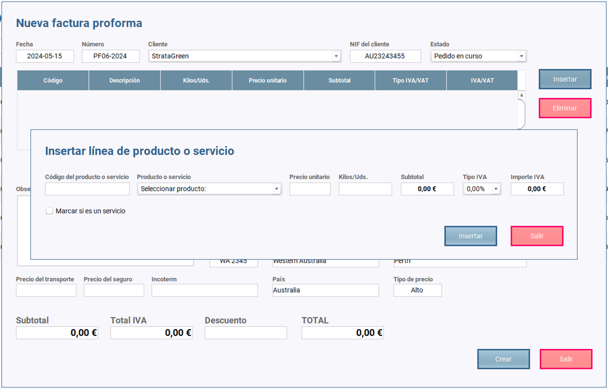

Una vez que hacemos clic en Ventas/Facturas proforma se abre el escritorio de facturas proforma.
Podemos observar una tabla con todas las facturas proforma creadas y tres botones: uno para añadir más facturas, uno para editarlas y otro para imprimirlas.
Las facturas no se pueden eliminar, sólo editar por si hay que cambiar un producto o algo relacionado con los costes. Si se quiere "eliminar" hay que hacer
una factura de abono que la anule.
El botón "NUEVA PROFORMA" hace que se abra un diálogo en el que insertaremos la información relevante de la factura proforma.
Podemos observar que se abre el diálogo con la fecha del día, que es editable por si queremos ponerle otra fecha, el número de la proforma, que no es editable
y es autoincrementable, y la fecha de vecimiento o validez que por defecto es de 30 días a partir de la fecha de emisión de la factura y también es editable.
Asimismo, podemos ver dos botones: uno para insertar líneas de producto o servicio y otro para eliminarlas si nos equivocamos o si el cliente cambia de idea.
Antes de insertar líneas de producto o de servicio es necesario seleccionar el cliente en el combo box y el estado del pedido poniendo normalmente "Pedido en curso".
El estado del pedido se podrá modificar posteriormente cuando corresponda a "Pedido realizado" o a "Pedido cancelado".
Una vez seleccionado el cliente, se rellena automáticamente la información de este en los campos correspondientes. Nótese que se incluye un campo en el que se
rellena el tipo de precio que le corresponde. Esto es fundamental para que al seleccionar el producto en el combo box del diálogo de insertar productos, le ponga
el precio que le corresponde para hacer el cálculo correcto de la factura proforma.
El botón "INSERTAR" hace que se abra un diálogo en el que añadiremos las líneas de producto que el cliente quiera.
Para ello antes es necesario seleccionar el cliente en el combo box y el estado del pedido, como ya hemos indicado.

A continuación, seleccionamos en el combo box el producto que queremos insertar y se rellena automáticamente toda la información menos el número de kilos o unidades,
y el tipo de IVA. Estos datos los debemos introducir nosotros. Una vez hecho, hacemos clic en insertar y se añade el producto en la tabla de productos de la proforma.
Nótese que hay un pequeño check para marcar si lo que insertamos es un servicio en vez de un producto.
Cuando hemos terminado de insertar los productos, rellenamos la información que corresponda respecto al transporte, el seguro, la cláusula incoterm que corresponda,
observaciones que queramos añadir y el descuento si lo hubiere. Finalmente, hacemos clic en crear y se crea la factura correspondiente.
El botón "EDITAR" hace que se abra un diálogo en el que añadiremos nueva información de la factura proforma o modificaremos lo que sea necesario.
Para ello antes es necesario seleccionar la fila en la que se encuentra la factura proforma que queremos editar.
Podemos ver que el botón "CREAR" pasa a llamarse "ACTUALIZAR" y podemos "AÑADIR MÁS" líneas de producto si es necesario.
El botón "IMPRIMIR" hace que se imprima la factura proforma seleccionado de la tabla.
Para ello antes es necesario seleccionar la fila en la que se encuentra la factura que queremos imprimir
El botón "BUSCAR" nos permite buscar las facturas proforma que están en la base de datos. La búsqueda podemos hacerla:
Únicamente es necesario introducir algunos caracteres y pulsar en el botón "BUSCAR" para que lo encuentre sin problemas